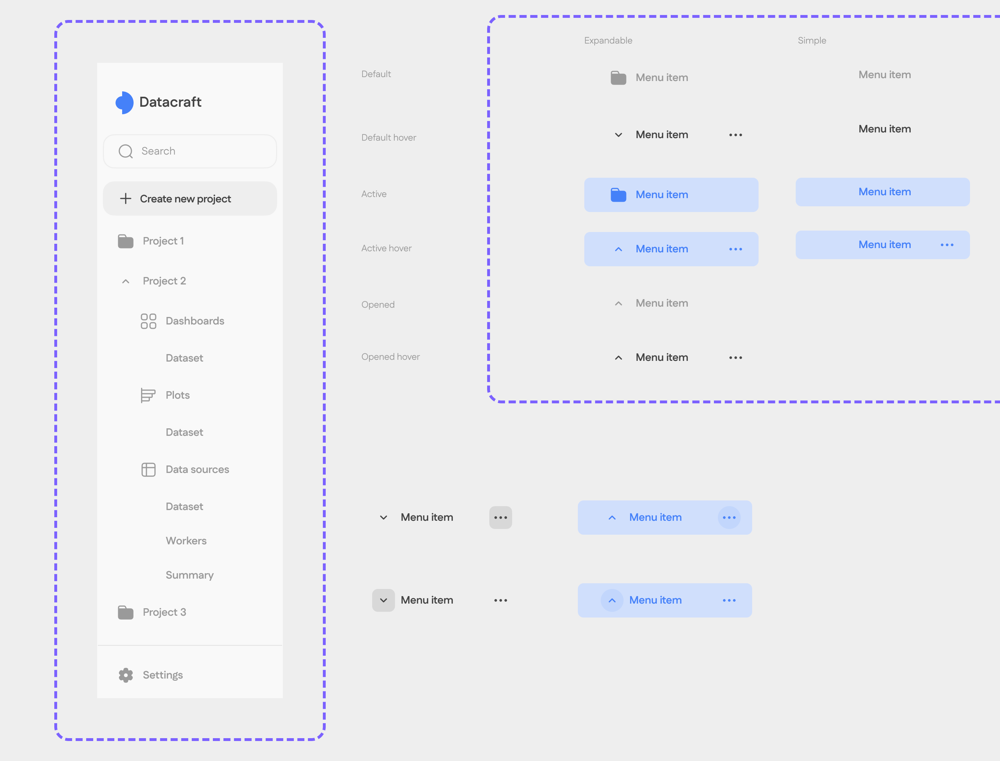
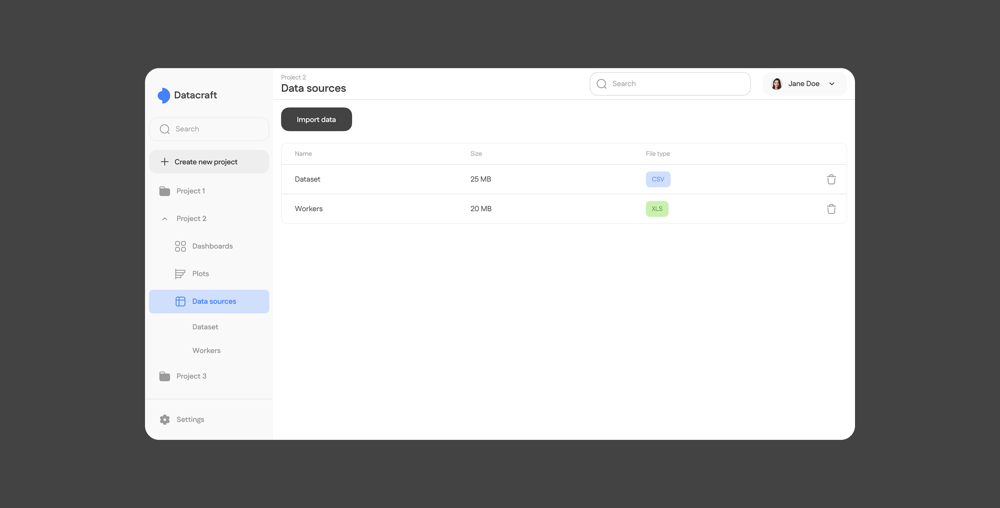
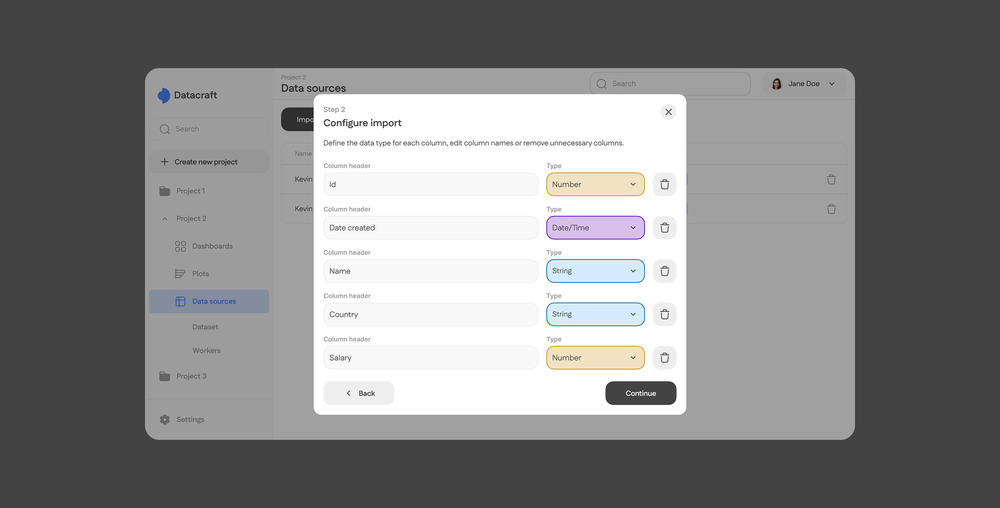
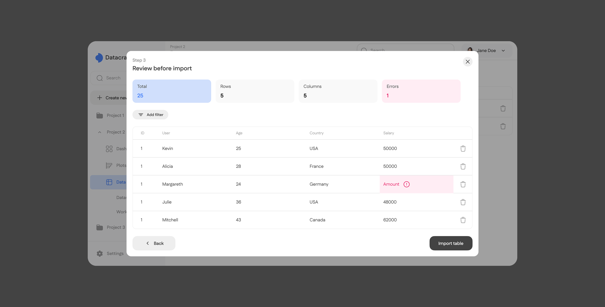
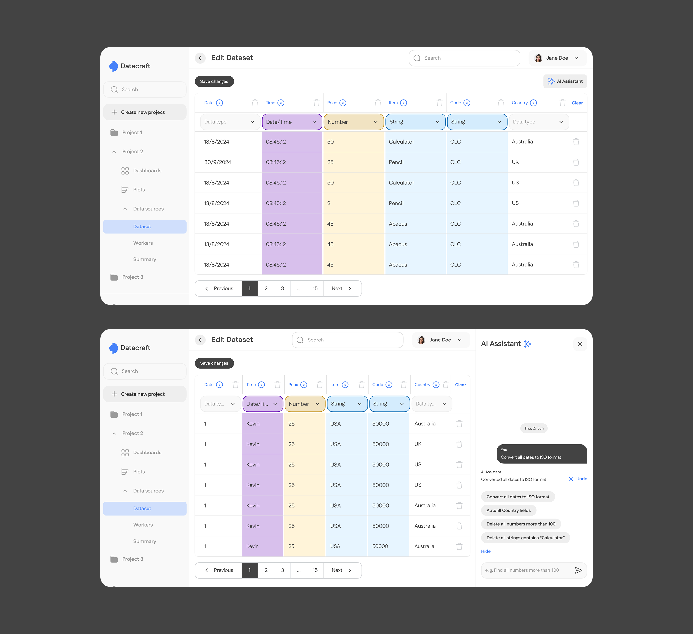
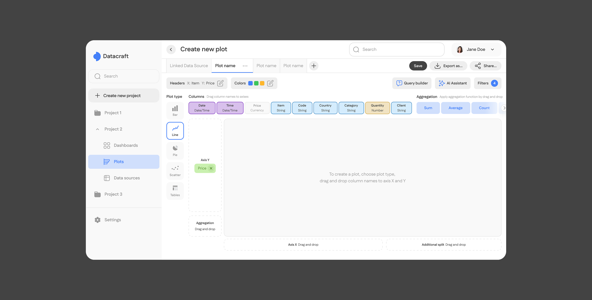
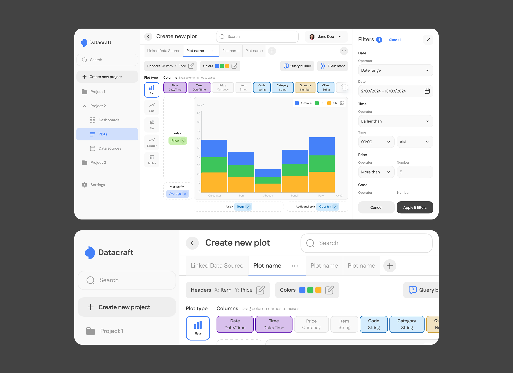
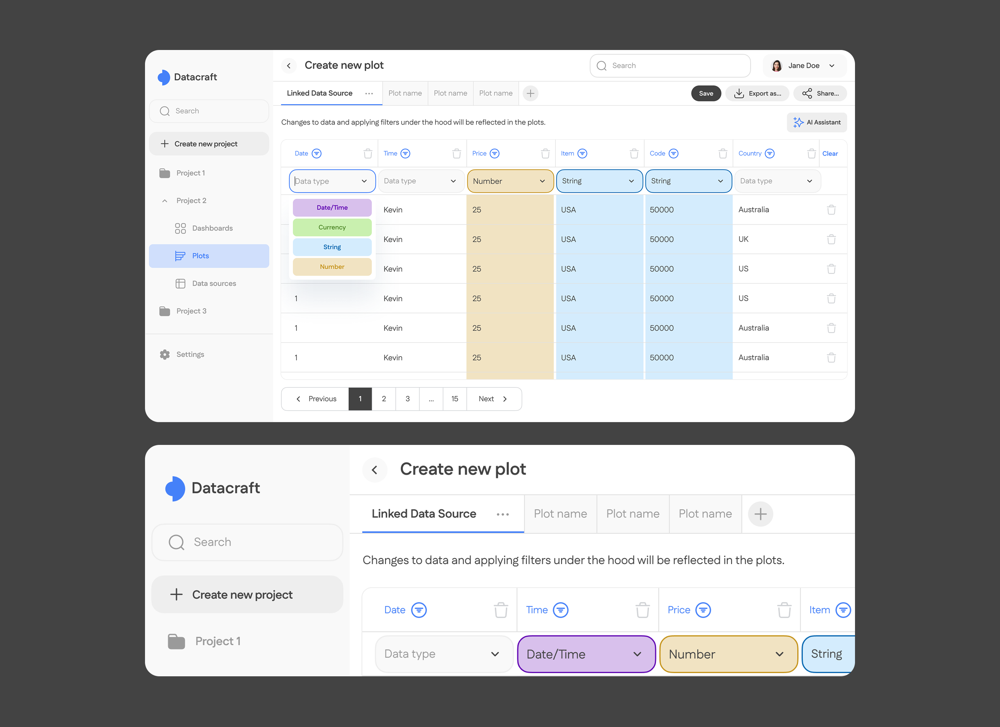
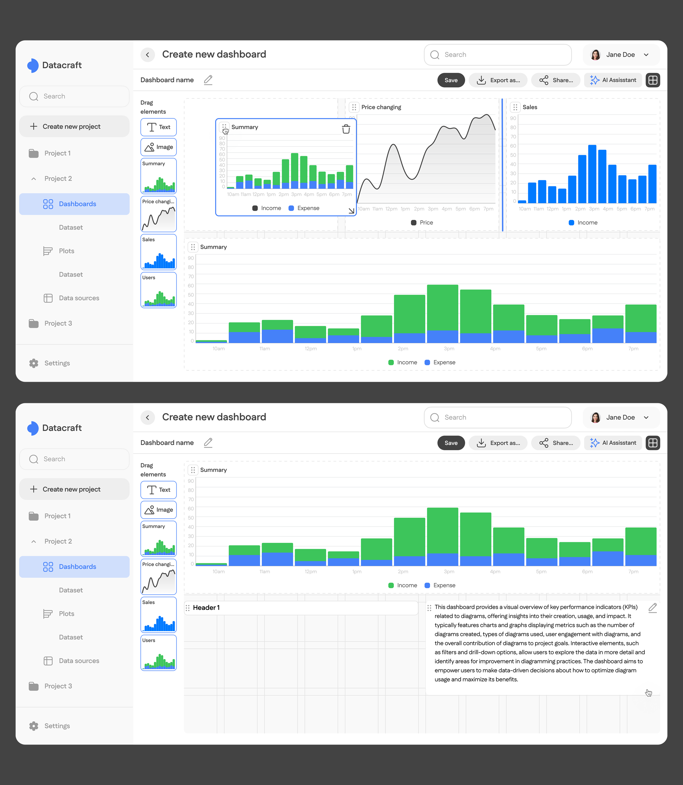

О проекте
Заказчик обратился с просьбой создать веб-сервис, который упростит работу с табличными данными для пользователей без глубоких навыков в Excel.
Основные ожидания:
- интуитивный интерфейс;
- возможность быстрой валидации данных;
- простые инструменты для создания графиков и дашбордов.
Целевая аудитория
Профессия: бухгалтеры, финансисты, аналитики - сотрудники малых и средних компаний, которые работают с Excel-отчётами и выгрузками из 1С или CRM.
Цели, желания: быстро проверить таблицу на ошибки и подготовить отчёт с визуальными примерами.
Боли пользователей
Чтобы понять потребности пользователей, я изучила существующие сервисы (Excel, Google Sheets) и собрала информацию о типичных проблемах.
- ошибки в таблицах сложно найти вручную;
- валидация часто требует знаний формул или скриптов;
- построение графиков занимает много времени;
- для простых задач BI-инструменты избыточны;
- отчёты приходится собирать в нескольких инструментах.
Юзер-стори
- Как бухгалтер, я хочу загрузить Excel-файл и сразу увидеть ошибки, чтобы не тратить часы на проверку вручную.
- Как менеджер, я хочу быстро построить график для презентации, чтобы показать результаты команде.
- Как аналитик, я хочу собрать дашборд из графиков, чтобы отслеживать ключевые показатели на одном экране.
Навигация
Создала боковое меню с тремя основными разделами - таблицы, графики, дашборды. В каждой из этих вкладок можно будет зайти на конкретный объект, он тоже показан вкладкой подменю, что позволяет получать быстрый доступ к каждому проекту.

Импорт данных
- Автоматическое определение структуры (заголовки, даты, числа).
- Подсветка ошибок и предложения исправлений.
- Поддержка Excel, CSV, Google Sheets.
- AI - ассистент, которого можно попросить проанализировать таблицу, устранить ошибки за тебя - просто написать запрос в боковой панели.




Создание графиков
График можно создать на основе загруженной ранее таблицы или загрузить новую.
- Выбор колонок для визуализации - по оси X и Y. Есть дополнительные функции, такие как агрегирование, возможность разделить данные по дополнительным признакам.
- Есть несколько типов графиков - столбчатая диаграмма, круговая диаграмма, таблица.
- Возможность кастомизации - можно выбрать цвета.
- Можно показать данные, соответствующие фильтрам.



Конструктор дашбордов
- Drag-and-drop для сборки из графиков.
- Гибкая настройка расположения и размеров.

Результат
Для заказчика получился прототип проекта, который закрывает потребность пользователя в простом инструменте редактирования табличных данных и создания презентаций в одном интерфейсе. Он интуитивно понятен, сокращает рутину и упрощает работу с таблицами. Проект готов к дальнейшему развитию и презентации инвесторам.
← К портфолио